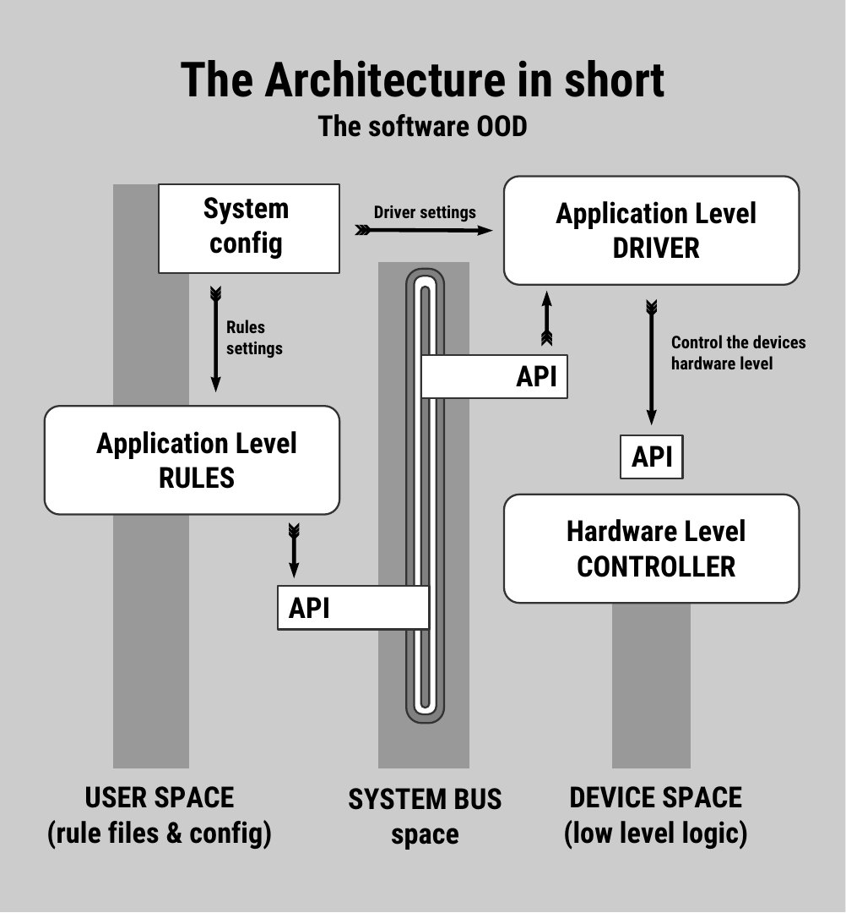

2021–2022 · Phoenix Baseball Systems (USA)
FireBall pitching simulator: control-system architecture
FireBall is a pneumatic pitching simulator that reproduces real MLB pitches synchronised with video of the pitcher. I was contracted to design its embedded control system and started the implementation.


The task
Six servo axes (pitch, roll, yaw, Z and two spin motors up to 3,200 rpm), 13 discrete outputs (solenoid valves, laser, indicator lights, alarm), analog sensors (tilt, pressure, ball presence), synchronised video playback, a RESTful API and a role-based wireless web GUI — all on an NXP i.MX8M (Nitrogen8M) single-board computer.
Proposed architecture



Download the full document (PDF)
Pitch scenarios are Lua rules; elementary machine actions are C application-level drivers; vendor hardware APIs sit below; everything is linked over a system bus. The same layering later went into production in router firmware.
What I did
- Analysed the client's requirements and proposed the layered architecture above.
- Ported OpenWrt's ubus and UCI to Ubuntu (the target OS was Ubuntu Core), so the controller could use the same tooling as OpenWrt devices.
- Wrote the first part of the rule engine in C: data model (modules, rules, variables with UCI / ubus / constant sources, typed values), a per-cycle value cache and a uloop-driven evaluation loop.
- Negotiated the engagement in English and drafted the contract with four addenda: staged MVP delivery (planning, estimate, research, development, demonstration with source code), payment schedule, shared equipment and schedule risks.
- Defined MVP-1: a test bench integrating the servo motors, I/O device, relays and tilt sensor.
The project was suspended in early 2022 when the hardware kit could not be shipped to Russia.